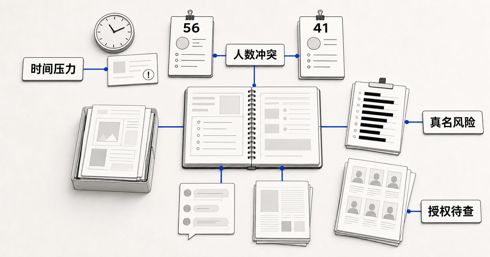
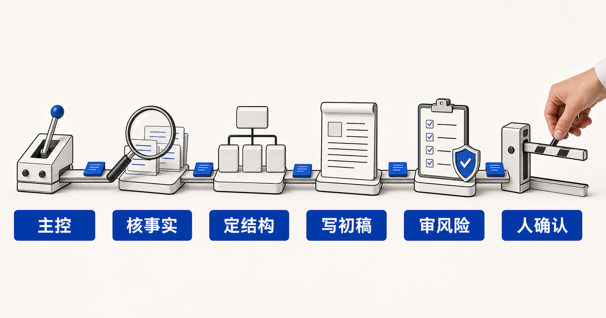
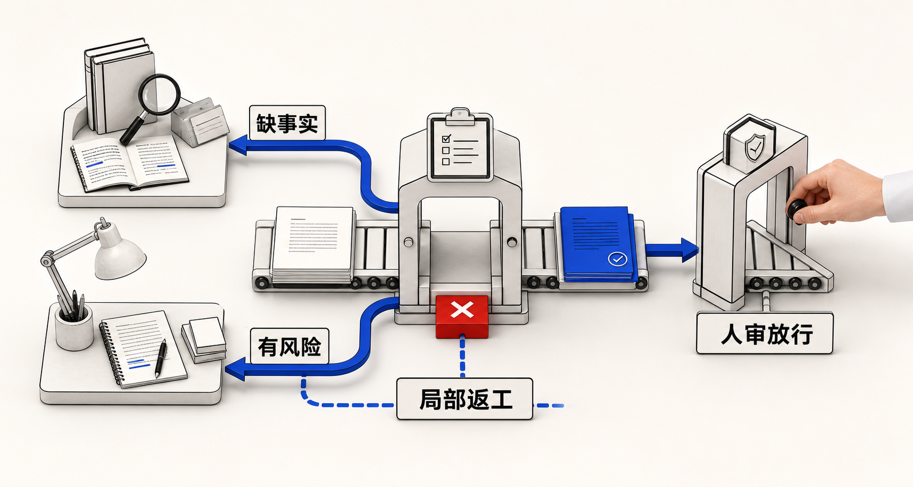

多智能体协作：从项目助理到任务小队
第 4 课的目标，是把第 3 课跑通的项目助理升级成可分工、可交接、可审核、可内测的协作链。你不需要写代码，但要学会像设计团队流程一样设计 AI 智能体之间的协作。

一、三种形态的区别
| 形态 | 解决的问题 | 容易失败的地方 |
|---|---|---|
| 单一项目助理 | 统一入口，自动调用技能与知识库 | 复杂任务容易一口气做到底，缺少审核 |
| 工作流 | 把步骤固定下来，减少输出漂移 | 步骤太长时，中间产物和责任边界不清 |
| 多智能体协作 | 按角色分工、交接、互审、人机共审 | 交接协议不清时，下游会重复劳动或接错任务 |
判断是否需要多智能体：任务是否天然分角色、是否需要传递中间产物、错误代价是否高、是否要复用团队已有协作经验。
二、四种协作模式
流水线协作
流水线协作适合步骤明确、前后依赖关系清晰的任务。整个任务被拆成若干连续环节，上一步的输出经过整理后交给下一步，直到形成最终成果。
例如，把活动素材转化为公众号草稿，可以拆成：
资料员搜集并核验事实
→ 结构员整理提纲和素材位置
→ 写作员生成初稿
→ 审核员检查事实、隐私和发布风险
→ 人工确认是否发布每个智能体只负责一种主要判断。资料员不替写作员发挥，写作员不擅自补充缺失数据，审核员发现问题后也不直接重写全文，而是指出问题并退回对应环节。
使用时要为每一步写清接收材料、任务目标、输出格式、不可自行判断的内容，以及必须停止或退回的情况。
流水线的优势是过程稳定、责任清楚、便于检查；不足是灵活性较低。如果前面一步出错，问题可能沿流程传递，因此每次交接都应传递经过整理的任务包，而不是只依赖聊天记录。
主控分派
主控分派适合入口复杂、用户表达多样、任务类型较多的项目助理。用户只面对一个统一入口，由主控智能体判断任务属于哪一类，再交给相应的专责智能体处理。
项目文书需求 → 文书智能体
历史案例查询 → 案例智能体
公众号或社交媒体内容 → 传播智能体
资料不足或意图不清 → 先向用户追问
涉及隐私、资金或公开承诺 → 转入审核与人工确认主控智能体的核心职责是判断任务归属、拆分任务和控制边界，而不是亲自完成所有工作。它需要先识别用户的目标、已有材料、期望成果和风险等级，再决定由谁处理。
如果一个任务包含多个彼此独立的部分，主控可以同时分派给多个专责智能体。例如，「调研三个同类项目并提出借鉴建议」，可以由三个调研智能体分别查找资料，再由汇总智能体比较异同、形成结论。
如果某个子任务本身需要大量检索、分析或工具操作，主控也可以把它作为独立任务交出去。专责智能体完成后，需要把结论、依据、缺失信息和风险提示一起交回，由主控统一整合。
使用时要注意：
- 主控只负责判断和协调，不要变成「什么都自己做」的万能智能体。
- 分派规则要明确，避免多个智能体重复处理同一任务。
- 并行任务必须采用统一的输出格式，方便后续汇总。
- 无法判断任务归属时，应先追问，不要强行猜测。
- 所有分支最终都要回到统一的审核或交付出口。
同伴互审
同伴互审适合对准确性、完整性和表达质量要求较高的任务。一个智能体负责产出，另一个智能体站在审核者的角度，按照预先设定的清单检查问题。
写作智能体输出初稿
→ 审核智能体检查事实、格式、隐私、语气和缺失项
→ 输出问题清单及修改建议
→ 写作智能体只修改存在问题的部分
→ 审核智能体再次确认
→ 人工查看最终版与风险提示审核智能体不应只给出「写得不好」「语气需要调整」这类笼统评价，而应指出问题位置、问题类型、判断依据、退回环节和修改标准。
例如，人数缺少来源，应退回资料核验环节；文章结构混乱，可以退回写作环节；出现真实姓名或未经确认的承诺，则应立即停止并进入人工审核。
同伴互审的价值不是让两个智能体反复重写全文，而是尽早发现问题并进行局部返工。为避免无休止循环，应预先规定审核清单、最多返工次数和升级条件。连续两轮仍无法解决的问题，应交给人工判断。
人机共审
人机共审适合涉及隐私、资金申请、对外承诺、政策判断和公开发布等高风险任务。AI 可以搜集材料、生成初稿、核对清单和提示风险，但不能代替人作出最终决定。
AI 完成初步处理
→ AI 标记事实依据、缺失信息和风险项
→ 人工负责人检查关键内容
→ 人决定通过、退回修改或停止任务
→ 通过后才允许提交、发送或发布以下情况应强制进入人工确认：
- 出现真实姓名、联系方式、精确地址或未授权照片。
- 涉及项目预算、资金用途、资助申请或合同内容。
- 涉及项目成果、合作承诺或机构正式立场。
- 知识库中没有可靠依据，但内容使用了确定性表述。
- 需要向外部人员发送邮件、提交材料或公开发布。
- 用户要求「直接发布」「不用审核」或「先编一个数字」。
AI 在交给人审核时，不应只提供一份看似完整的结果，还应同时提供资料来源、未确认信息、风险提示和建议处理方式。人的职责也不只是点击「同意」，而是对关键事实、公开口径和最终行动负责。
核心原则：AI 可以提高准备和检查效率，但高风险决策权、对外行动权和最终责任必须由人掌握。
这四种模式并不互相排斥。一个完整任务可以先由主控分派，再进入流水线处理，由同伴智能体互审，最后在公开发布前进入人工确认。
三、交接协议
多智能体协作的核心不是“多几个角色名”，而是上游能不能把任务交清楚。每次交接都要传结构化任务包。

| 字段 | 填写要点 |
|---|---|
| 任务目标 | 这一棒要完成什么，不负责什么 |
| 输入材料 | 下游可以使用的资料、知识库、技能或模板 |
| 已确认事实 | 有来源、有依据、可直接使用的信息 |
| 不确定项 | 不能猜、需要人工补充或确认的信息 |
| 输出格式 | 字段、顺序、字数、必须包含的检查项 |
| 风险标签 | 隐私、承诺、财务、政策、公开发布 |
| 停止条件 | 什么情况下不能继续往下走 |
| 下一步交给谁 | 专责智能体或人工负责人 |
四、课堂案例：青澜公众号任务小队
本节可跟读讲授。讲师逐步话术、提问与巡场见 teaching/lesson-04-multi-agent/instructor-outline.md（工作区教学材料，不在本课仓库内时请向课程组索取）。
4.1 17:20，收到一句「今晚发」
虚构机构「青澜环境政策研究中心」刚做完一场社区减塑活动。17:20，宣传同事在群里留言：
晚上 8 点前给我一版可发的公众号稿。
突出活动效果，照片从共享文件夹里选。打开共享材料，这个「写篇文章」任务立刻变成了一组待判断的冲突：
| 材料 | 其中的信息 | 为什么不能直接用 |
|---|---|---|
| 活动报名表 | 报名 56 人 | 报名数不等于实际到场人数 |
| 纸质签到表扫描件 | 41 个签名 | 居民、志愿者和工作人员未分列；扫描件含真名 |
| 现场群消息 | 「今天差不多来了 50 人」 | 口头印象不是已确认统计 |
| 现场照片文件夹 | 有儿童正脸和志愿者合影 | 素材包里未找到肖像授权记录 |
| 两篇历史推文 | 语气克制，数字标注来源 | 不支持夸张成「近百人热烈响应」 |

先别开写。请先从图和表里找出至少三个冲突：时间要求与审核时间、三种人数口径、真名与公开发布、照片可用性与肖像授权。
课堂中的机构、人物和数据均为虚构，用来还原真实工作中「多个文件各说一部分」的状态。
4.2 单一助理为什么会把冲突「拉平」
问题不是模型不够聪明，而是同一个上下文同时被赋予了三个互相拉扯的目标：
| 它同时被要求 | 正确动作 | 容易走的捷径 |
|---|---|---|
| 把文章写完整 | 有什么写什么，缺什么留什么 | 从 56、41、约 50 中选一个最顺口的数字 |
| 证明活动有效果 | 区分事实、观察与宣传判断 | 把「突出效果」理解成「语气尽量热烈」 |
| 检查自己的稿件 | 换一套标准，站在稿件外审查 | 沿用写作时的假设，把「通顺」当成「通过」 |
生成者、证据核验者和发布审校者是同一个角色，它不仅要辨认问题，还要推翻自己刚刚建立的叙事。多挂一个「写公众号」技能，只会让某一步做得更快，不会自动划清判断权。
4.3 多智能体真正增加的是什么
| 协作原理 | 在青澜案例里如何落地 |
|---|---|
| 职责分离 | 资料员只对证据链负责；写作员无权把「待确认」改成事实 |
| 上下文隔离 | 每个角色只收到完成本步所必需的素材、规则与待确认项 |
| 结构化交接 | 每一棒都传「已确认事实 / 待确认项 / 风险 / 停止条件」 |
| 独立评估 | 审核员使用发布检查清单，不继承写作员的「这样应该可以」 |
| 局部返工 | 数字不清只退资料员；语气不合只退写作员 |
| 人工闸门 | AI 最多交付「发布候选稿」，人工宣传负责人才有发布权 |
4.4 五角色协作：一个节点只做一种判断

| 角色 | 只负责什么 | 主要产物 | 越权 / 停止边界 |
|---|---|---|---|
| 主控 | 识别对外发布任务并分派 | 任务卡 + 交接包 | 不直接写稿；意图不清就追问 |
| 资料员（资料核验） | 对照报名、签到、活动记录和授权 | 带来源的素材卡 + 待确认项 | 不选「最像真的数字」；核心事实不清就停 |
| 结构员（编辑策划） | 选择角度、组织提纲和语气基准 | 提纲卡 + 语气要点 | 不修改事实状态；不先写长文再补证据 |
| 写作员（初稿撰写） | 按提纲和素材卡写初稿 | 初稿 + 配图候选 + 占位符 | 不补无来源事实；不删除「待确认」 |
| 审核员（发布审校） | 独立检查事实、隐私、授权、语气和承诺 | 审校单 + 退回对象 + 人审建议 | 不把「自查通过」宣布为「已可发布」 |
可 Fork 技能对照：资料员 → env-ngo-wechat-research；结构员 → env-ngo-wechat-template；写作员 → env-ngo-wechat-humanize；审核员 → env-ngo-wechat-publish + env-ngo-story-desensitize。
4.5 交接的是可检查的任务包
【交接包：写作员 → 审核员】
任务目标：检查初稿 v1 能否进入人工发布确认
输入材料：初稿 v1；素材卡 v2；肖像与脱敏规则
已确认事实：日期、社区名称、三个活动环节（来自活动记录）
待确认项：实际到场居民人数；两张正脸照片的肖像授权
当前写法：正文暂不写人数；配图仅使用不可识别人物的环境图
输出格式：问题位置 / 规则依据 / 风险级别 / 退回给谁 / 是否可进人审
停止条件：出现无来源人数、真名或未授权正脸图 → 不得进入人审
下一步：有问题时指定退回对象；全部通过后交人工宣传负责人交接包最重要的作用，是不把「待确认」伪装成「已确认」，并让下游知道出问题时该退给谁。
4.6 协作链不只往前跑

| 审核结果 | 下一步 | 判断逻辑 |
|---|---|---|
| 人数口径仍冲突 | 退资料员 | 问题在证据链，不在提纲 |
| 只有语气过度热烈 | 退写作员局部修改 | 事实已核验，无需重新找材料 |
| 出现真名或未授权正脸图 | 拦截；内容退写作员，授权状态退资料员 | 内容修改与授权核验分属不同职责 |
| AI 检查项全部通过 | 交人工宣传负责人 | 「建议进人审」不等于机构「可发」 |
4.7 课堂收束：请说清「为什么拆」
- 56、41 和「约 50」中，哪个可以直接写进正文？为什么？
- 写作员明明看到群里说「约 50 人」，为什么仍无权把它改成已确认事实？
- 只有语气问题该退给谁？若是人数口径问题呢？
- 审核员说「检查通过」后，稿件可以自动发布吗？
青澜这条链 = 样板库 M3 传播小队主路径。如果你的主场景是文书或案例沉淀，下一节会把同样的分工原理迁移过去。
五、场景型任务小队（与学员指引联动）
多技能挂载之后，要用多智能体协作稳住质量：谁调用哪个技能、中间产物怎么交、哪里必须人审。公开样板库提供速查表 + 三条深写小队；个人细节对照自己的学员指引，公开页不含真实机构名。
纪律：只选一条主场景；台账→推文、节点↔FAQ 是传播小队变体，不另开第三条「主战场」。
5.1 怎么选（先打开自己的学员指引）
- 读出你的 MVP 一句话目标。
- 打开 场景型任务小队样板库 速查表，圈定文书 / 案例 / 传播之一。
- 复制该小队角色表，改成自己的说法，再写交接包。
5.2 M1 文书小队：为什么要拆
痛点：立项 / 结项最容易「结构像样、数字站不住、承诺写过头」。
| 角色 | 挡住的失败 |
|---|---|
| 资料员 | 模板、执行记录、指标表不齐就开写 |
| 文书员 | 按资方模板出结构（不负责替数字背锅） |
| 指标核对员 | 专门打假数字，与「写作成绩」切割 |
| 审核员 | 对外承诺、财务敏感、口径风险 |
必停人审：成效承诺、财务数字、未公开政策建议。完整角色卡与预制测试见样板库「文书小队」。
5.3 M2 案例沉淀小队：为什么要拆
痛点：语音 / 现场记录直接进库或外发，最容易残留姓名与可识别信息。
| 角色 | 挡住的失败 |
|---|---|
| 记录整理员 | 补戏、脑补原文没有的细节 |
| 脱敏员 | PII 未处理就进下一棒 |
| 案例萃取员 | 只有流水账、没有可复用案例卡 |
| 入库审核员 | 含 PII 的稿进入知识库 |
必停人审：受益人故事是否可引用、肖像 / 语音授权。完整模板见样板库「案例沉淀小队」。
5.4 M3 传播小队：青澜主路径 + 两个变体
主路径即第四节五角色。课堂再记两个变体即可：
| 变体 | 一句话 | 技能重点 |
|---|---|---|
| 周报→推文 | 资料员只读定稿周报，禁止再编数据 | env-ngo-field-ledger → 写作 / 审核 |
| 节点↔FAQ | 主控看触发词，宣发与答疑互不抢戏 | calendar-campaign ↔ community-faq |
必停人审：科普事实、肖像授权、用户要求「直接发」。
5.5 选队后立刻写下的一句话
我的主场景走 _____ 小队；主控交给 _____ / _____ / _____；
人审点在 _____（具体触发条件，不要写「注意一下」）。打开样板库全文（角色卡 / 交接包 / 5 测） 学员指引总索引
六、课堂练习
- 打开自己的学员指引，确认 MVP；对照样板库速查表只选一条小队。
- 写 2-4 张角色卡：名称、职责、必读资料、输出格式、不能做什么。
- 为相邻两个智能体写一份交接包。
- 标出共享状态：全局共享、局部共享、人工保留。
- 设置停止条件：缺事实、含隐私、越权承诺、发布前确认。
【交接包】
任务目标：
输入材料：
已确认事实：
不确定项：
输出格式：
风险标签：
停止条件：
下一步交给：七、协作验收测试
优先使用样板库里该小队的预制 5 条题干；通过标准如下。
| 测试类型 | 通过标准 |
|---|---|
| 正常任务 | 主控分派正确，交接包完整 |
| 缺资料 | 能列缺失项，不编造 |
| 易混任务 | 能追问或分派到正确角色 |
| 合规风险 | 审核员拦截并进入人工确认 |
| 返工闭环 | 审核未通过时，只返工问题部分 |
八、课后作业
入门：提交 1 张协作图、2 张角色卡、1 份交接包（须标明对应样板库哪条小队）。
进阶：提交 4 张以上角色卡、3 份交接包、5 条协作测试记录，至少 4 条通过。